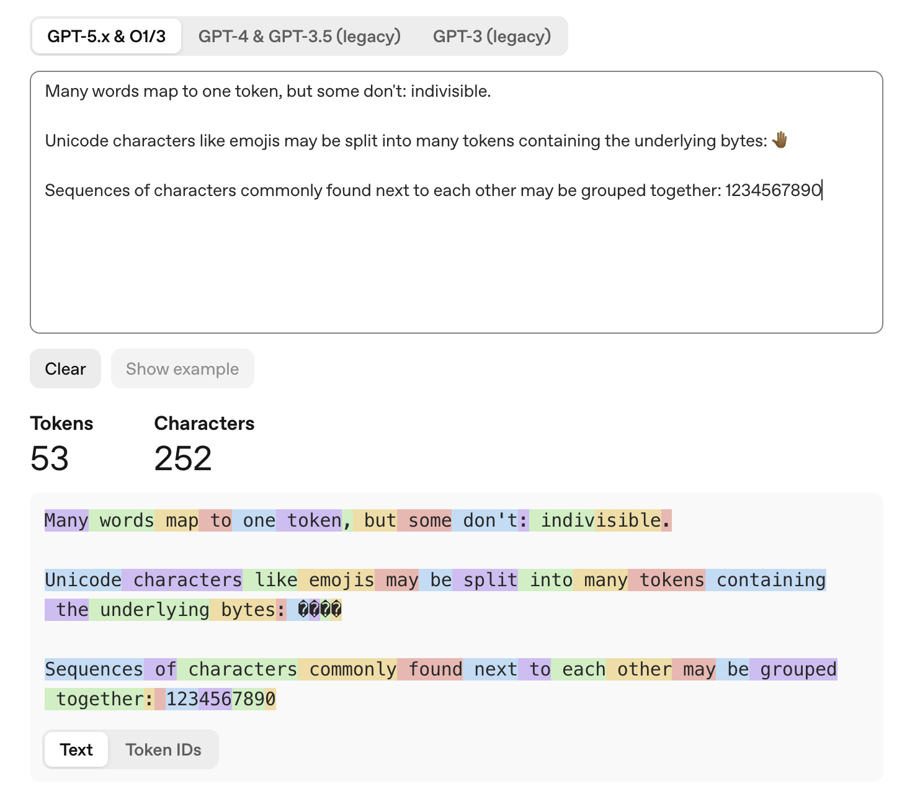
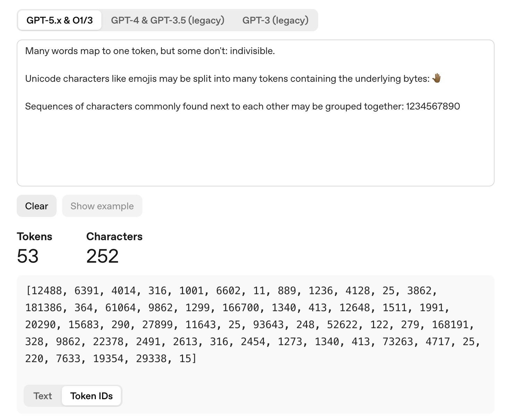

Before training a LLM, we will need a tokenizer to convert the raw text input to discrete token ids and then map to embeddings for the model to process.
In this section, we will use the Unicode Standard and train a BPE tokenizer.
The Unicode Standard
The Unicode Standard refers to the standard character set that represents all natural language characters. Below are some important concepts.
Code Points
$$ \text{The Unicode Standard} = \{\text{character(char)}\} \xrightarrow{\text{encoding}} \{\text{code point(int)}\} $$>>> def codepoint(c):
... return f"U+{ord(c):04X}"
...
>>> codepoint('a')
'U+0061'
>>> codepoint('吃')
'U+5403'
>>> codepoint('💩')
'U+1F4A9'
In general, we can consider it as a giant table that maps each character to a unique integer, called a code point. Current Unicode 17 has a total of 159,801 characters. In theory, there could be at most 17 * 65,536 = 1,114,112 code points (17 planes, each with 65,536 code points).
Unicode Transformation Format
$$ \text{UTF} = \{\text{code point(int)}\} \xrightarrow{\text{encoding}} \{\text{byte sequence(bytes)}\} $$It would be wasteful to encode each character with the corresponding code point, which costs 4 bytes. So we have UTF (Unicode Transformation Format) to save space. It is an algorithmic mapping from every Unicode code point to a unique byte sequence.
There are three types of UTF algorithms:
-
UTF-8: 1 codepoint = $1 \sim 4$ bytes
-
UTF-16: 1 codepoint = $2 \text{ or } 4$ bytes
-
UTF-32: 1 codepoint = 4 bytes
among which UTF-8 is the most widely used encoding on the web and we will use UTF-8 throughout this assignment.
Levels of Tokenization

tokenization level
With UTF-8 encoding, we are essentially taking a sequence of codepoints which are encoded into a sequence of bytes ($\in \{0, 1, \ldots, 255\}$). That’s what’s fed into the entire modeling pipeline.
There are several ways to tokenize such kind of input, primarily based on the level of tokenization:
| Level | Definition | Pros | Cons |
|---|---|---|---|
| Byte | 1 token = 1 byte | No OOV token | Longer seqlen |
| Word | 1 token = 1 word | Shorter seqlen | Potential OOV token |
| Subword | 1 byte ≤ 1 token ≤ 1 word | No OOV token and shorter seqlen | More complex training process |
Most LLMs nowadays use subword tokenization such as BPE, because it gives us the best of both worlds in terms of out-of-vocabulary handling and manageable input sequence lengths
Byte-Level Byte Pair Encoding (BPE)
Subword tokenizers with vocabularies constructed via BPE are often called BPE tokenizers. It starts with a byte-level vocabulary and iteratively adds new subword-level tokens.
A trained BPE tokenizer encodes texts like this:

An example of BPE encoding from tiktoken

BPE token IDs
It consists of 3 essential parts:
-
token2id: dict[Token, int]: a mapping from token to token id -
id2token: dict[int, Token]: a mapping from token id to token -
merges: list[tuple[Token, Token]]: a list of merges produced during training ordered by order of creation.
I use Token = bytes as a type alias.
The training process is the process of learning the tokens and merges from the training data.
BPE: Training
We can divide BPE training into three stages below.
Initialization
BPE initializes the vocabulary with special tokens and 256 byte values. The merges list is initialized as an empty list.
token2id, id2token = {}, {}
merges = []
for special_token in special_tokens:
token = special_token.encode("utf-8")
token2id[token] = len(token2id)
id2token[len(id2token)] = token
for i in range(256):
token = bytes([i])
token2id[token] = len(token2id)
id2token[len(id2token)] = token
Pre-tokenization
This pre-tokenization stage could be generally considered as a coarse-grained tokenization over the corpus that helps us count how often pairs of tokens appear.
It has two steps:
-
Split by special tokens: we do not want to split special tokens;
-
Split by a given regular expression: this works better than
.split(' ');
For better consistency and clearness, I introduce the terms:
- document: the text after splitting by special tokens;
- word: the text after splitting by regular expression.
import regex as re
def split_by_special_tokens(text, special_tokens):
pattern = "|".join(re.escape(token) for token in special_tokens)
# note that the special tokens will be dropped in the output of re.split
# because we don't need them for training.
return re.split(pattern, text)
def split_by_regex(text, pattern):
return re.findall(pattern, text)
text = """low low lower lowest<|endoftext|>high high higher highest"""
PAT = r"""'(?:[sdmt]|ll|ve|re)| ?\p{L}+| ?\p{N}+| ?[^\s\p{L}\p{N}]+|\s+(?!\S)|\s+"""
special_tokens = ["<|endoftext|>"]
documents = split_by_special_tokens(text, special_tokens)
print(documents)
# output:
# ['low low lower lowest', 'high high higher highest']
words = [word for document in documents for word in split_by_regex(document, PAT)]
print(words)
# output:
# ['low', ' low', ' lower', ' lowest', 'high', ' high', ' higher', ' highest']
It has several advantages:
-
Improves training efficiency: you can count the appearance of a word, then count pairs within the word and multiply by the word count, which is much more efficient than looking through the entire corpus for each pair;
-
Avoids different token ids for highly semantically similar tokens (e.g.
dog!vs.dog.): this is controlled by the regular expression;
Merge Iterations
This is the core of the training process: we iteratively pick the most frequent token pair and merge it into a new token until we reach the desired vocabulary size.
After pre-tokenization, we get a giant list of words. For faster training, we can compress the words into a dictionary:
def compress(words):
corpus = {}
for word in words:
tokens = tuple([bytes([w]) for w in word.encode("utf-8")])
corpus[tokens] = corpus.get(tokens, 0) + 1
return corpus
corpus = compress(words)
# output:
# {
# (b" ", b"h", b"i", b"g", b"h"): 1,
# (b" ", b"h", b"i", b"g", b"h", b"e", b"r"): 1,
# (b" ", b"h", b"i", b"g", b"h", b"e", b"s", b"t"): 1,
# (b" ", b"l", b"o", b"w"): 1,
# (b" ", b"l", b"o", b"w", b"e", b"r"): 1,
# (b" ", b"l", b"o", b"w", b"e", b"s", b"t"): 1,
# (b"h", b"i", b"g", b"h"): 1,
# (b"l", b"o", b"w"): 1,
# }
Then the training loop is like:
-
Find the most frequent pair in the corpus:
(token1, token2) = get_most_frequent_pair(corpus) -
Add the new merged token to the vocabulary and update the merges list:
new_token = token1 + token2 add_token(token2id, id2token, new_token) add_merge(merges, token1, token2) -
Update the corpus by replacing all occurrences of the merged pair with the new token:
corpus = update_corpus(corpus, token1, token2) -
Repeat until we reach the desired vocabulary size.